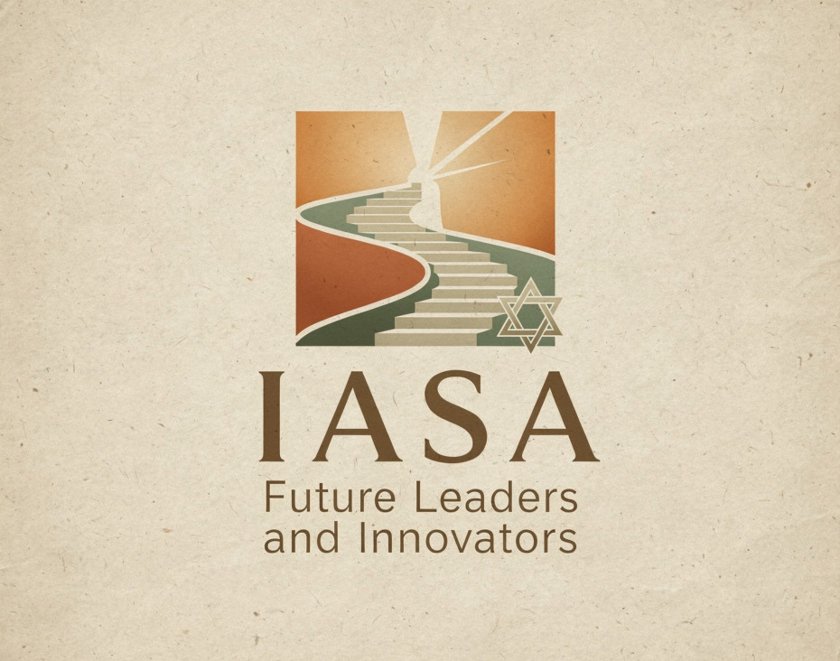
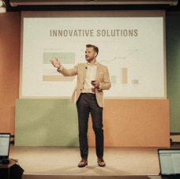
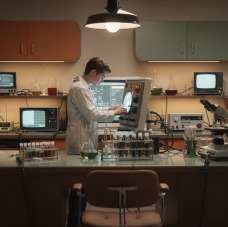
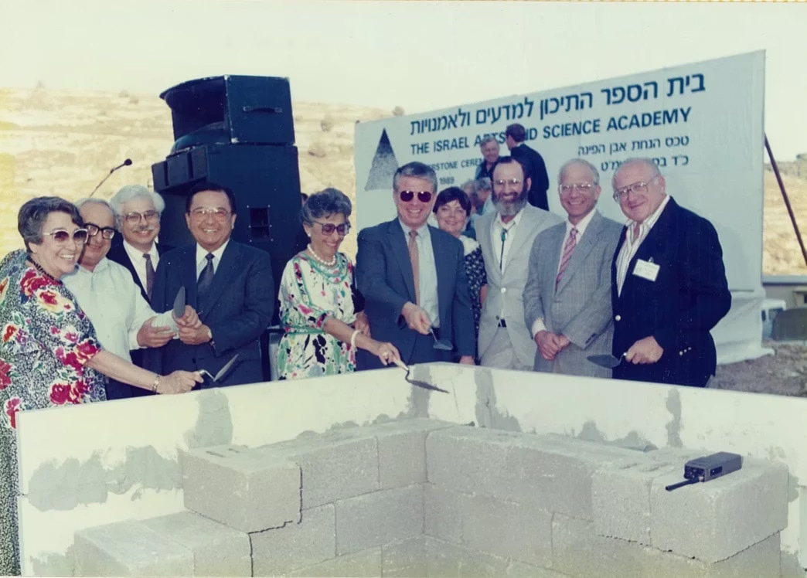
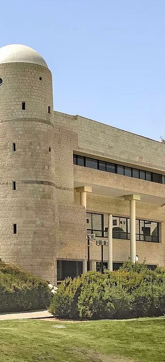

Investing in Israel’s
Greatest Resource:
Exceptional Minds
Since 1990, IASA has transformed exceptional students into Israel’s scientists, entrepreneurs, and leaders. Now we’re expanding to reach the talent that geography left behind.
The Problem
A Crisis Hiding in Plain Sight
Israel identifies its gifted children—then fails most of them. Access to gifted programs depends more on zip code than ability.
26%
Affluent areas: gifted ID
2022 national screening data — Clusters 1–6 (periphery) vs. Clusters 9–10 (affluent)
Why It Matters
Israel Needs Every Exceptional Mind
Economic Engine
Israel’s high-tech sector drives the economy, but global competition demands a deeper, more diverse talent pipeline than the center alone can supply.
Social Cohesion
Peripheral communities feel left behind. When talent from every background leads together, it builds the shared identity Israel urgently needs.
Security & Resilience
Elite military and intelligence units draw disproportionately from gifted programs. An underdeveloped periphery weakens national defense capacity.
Only 30% of Israel’s gifted students receive adequate education. The other 70% represent the untapped engine of the nation’s future.
The Solution
IASA:
A Proven National Model
Israel’s premier boarding school for gifted students. A nation-building institution that combines rigorous academics with values-based leadership—and has the 35-year track record to prove it.
0
alumni impacting
Israel & globally
The Model
How IASA Works
🔍
Find
Nationwide screening reaches every region. Rigorous testing, interviews, and workshops identify gifted minds that traditional systems miss.
🔓
Remove Barriers
Boarding eliminates geography. Merit-based scholarships (70%) eliminate money. What remains is pure ability and drive.
🎓
Develop
Small classes (25–29), master teachers (100% MA, 30% PhD), personalized paths across sciences, arts, and humanities.
🌟
Lead
Academic rigor fused with ethics, community service, and civic responsibility. 100% earned the Ministry of Education service award.
Outcomes
What Graduates Become
earn PhDs
(19x national avg)
of IDF Talpiot
(most selective unit)
national science
competition finalists
IASA represents 0.0005% of Israel’s high school population. Alumni include researchers at Weizmann, Princeton, and Harvard; Supreme Court attorneys; internationally acclaimed artists.
Alumni
Faces of Impact

Forter — $3B Fraud Prevention
Michael Reitblat & Liron Damri (Class of 2000) co-founded Forter: 14 offices, $500B+ in transactions protected annually, 1 billion consumers served. Both served in elite IDF intelligence.

Premature Birth Gene Discovery
Dr. Ortal Tamam’s team identified the first gene responsible for premature birth—the leading cause of child mortality. Won the Bill & Melinda Gates Prize.
Law & Medicine
Oral Ben Zvi: Supreme Court attorney shaping Israel’s legal framework. Aviv Ben Zvi: surgeon at Shaare Zedek, former IDF combat unit doctor (Major).
Israel Philharmonic
Soprano Tehila Siri Medvedda performed with the Israel Philharmonic under Zubin Mehta. Won the Jerusalem Opera Prize and Chestnut Piano International Festival.
Multiplier Effect
Education Lab:
Impact Beyond the Campus
IASA doesn’t just educate 450 students. Its R&D unit develops programs adopted by hundreds of schools—and entire countries.
Program Design
35 years of pedagogical knowledge distilled into structured programs for gifted education at scale.
Teacher Training
Trains teaching teams across Israel to identify and support talented children in any school setting.
Global Adoption
Singapore adopted IASA’s E2K program nationwide—replacing memorization with inquiry-based learning for high-potential students.
2023–Present
War Changed Everything
The Gaza war didn’t just disrupt education—it exposed how fragile Israel’s system is for its most vulnerable students.
- Thousands of students displaced from evacuated communities—no school, no routine, no stability
- Teachers deployed to reserves, leaving classrooms understaffed nationwide
- Demand for IASA surged—boarding schools became the only structured option for displaced families
- The need for leadership education became more urgent, not less
35 Years
Built by Visionaries

1990 — Founded by Raphi Amram, Mary Jane & Robert H. Asher as Israel’s first interdisciplinary residential high school for gifted youth.
1997 — U.S. Secretary of State Madeleine Albright visits. PM Netanyahu: “The waiting list is a hundred years long.”
2000s — Education Lab exports methods globally. E2K adopted by Singapore. Alumni begin transforming Israeli tech, law, and medicine.
2009 — Madoff collapse destroys supporting fund. IASA sustains excellence despite structural financial damage.
2025 — 35 years, 2,300+ alumni. Proven model ready to expand from one campus to three.
Jerusalem Campus
The Schusterman Campus

Facilities
10-acre campus with laboratories, music studios, art workshops, a 500-seat auditorium, dormitories, and sports facilities.
Community
Secular & religious Jews, Muslims, Christians, and Druze learn side by side. Students from 100+ communities across Israel.
IASA 2.0: Strategic investment needed—$300K→$550K in scholarships, $500K in dormitory & smart classroom renovation, $400K→$500K in expanded programs (2026–2027).
Expansion
One Vision,
Three Campuses
Unified academic standards. Shared pedagogy. Local access, national coherence. Excellence is no longer limited by geography.
Jerusalem
Flagship campus & innovation lab. Develops the pedagogy that powers everything. 35 years of proven excellence.
Northern Campus
Kiryat Shmona & Eastern Galilee. After-school excellence programs, teacher training. Vital for post-war rehabilitation.
Southern Campus
Netivot (Gaza envelope). Full IASA high school, grades 9–12 with boarding. Opening 2026–2027.
Southern Campus
Netivot: Building From the Ground Up
Year 1 operations
Philanthropic
Ministry of Education funds school construction. Netivot Municipality funds boarding. Up to 50% of students will board. Philanthropic support declines to 7–10% of operating budget by Year 5—a path to sustainability, not dependency.
Financial Reality
A Turning Point
IASA never compromised on academics. But the financial foundation needs rebuilding.
Madoff Collapse (2009) — Supporting fund wiped out, creating structural vulnerability that persists today.
Founder Transitions — Passing of founding Board members eroded the original American donor base.
No Successor Leadership — The founding generation’s philanthropy was never replaced by a next generation of partners.
Academic excellence sustained — Despite everything, not a single year of compromise on standards.
The Path Forward
From Small Circles to Shared Responsibility
🤝
Broad Partnerships
Move beyond a handful of founding donors to a resilient base of committed partners.
🏛
National Mission
IASA isn’t a private school. It’s national infrastructure—and should be supported as such.
📈
Strategic Growth
Three campuses, one standard. Reach every region where gifted students currently have nowhere to go.
The Ask
What Your Partnership Enables
Board Leadership
Join the reconstituted American Board. Provide strategic guidance. Leverage your network to secure IASA’s next chapter.
Annual Campaign
Multi-year commitment toward ~$1.2M annually. Operational stability for Jerusalem. Predictable funding for expansion.
Campus Expansion
Champion the Northern and Southern campuses. Every dollar reaches students who have no other path to excellence.
Urgency
Why Now
The Void Is Real
Operating sustainability depends on a restored Board. Without it, 35 years of institutional excellence is at structural risk.
Expansion Can’t Wait
The Southern campus opens 2026–2027. Government is building the infrastructure. Philanthropic commitment is the missing piece.
Students Can’t Wait
Every year without expansion, hundreds of gifted children in the periphery age out of the system with their potential unrealized.
Defining Moment
This generation of leaders will determine whether IASA remains one campus or becomes a national network. The window is now.
“There was nothing like it—an interdisciplinary school for high-achieving students in the arts and sciences. Founded on three principles: Excellence, Leadership, and Community Service.”
— Bob Asher, Founder, at the cornerstone ceremony, June 27, 1989
Bob and Mary Jane Asher believed that investing in exceptional young people was a national responsibility. They built IASA with vision, commitment, and partnership.
We invite you to carry that torch forward.
Be the Next Link
in the Chain
0
alumni shaping
Israel’s future
Israel Arts and Science Academy • Jerusalem • Founded 1990